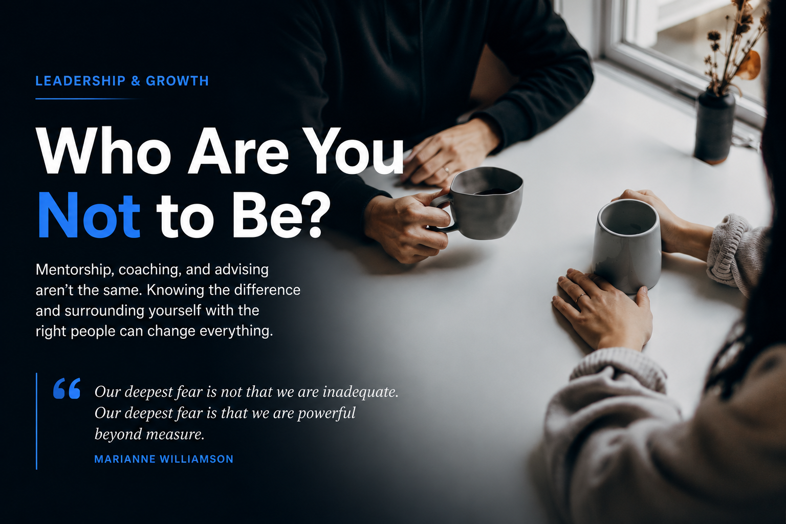

Mentorship
An ongoing relationship built on trust, values alignment, and continued conversation in both directions.
Mentorship is not coaching. Advising is not mentorship. Knowing the difference changes how you grow, who you ask for help, and how you show up for other people.

"Our deepest fear is not that we are inadequate. Our deepest fear is that we are powerful beyond measure... Who are you not to be?"
Marianne Williamson
I come back to this quote often because it cuts through the noise. People are rarely waiting for capability. Most are waiting for permission.
I have shared this quote with people who already knew what to do, but needed someone to say: yes, step into it. That is mentorship. It is not hype. It is not ownership. It is not credit-taking. It is steady belief with honest accountability.
The words mentorship, advising, and coaching get used interchangeably. They should not.
An ongoing relationship built on trust, values alignment, and continued conversation in both directions.
Perspective and feedback without the same long-term stake or continuity as mentorship.
A structured service with methodology, outcomes, and payment tied to a specific goal.
None of these are bad. All three can be valuable. The problem is confusion. People ask mentors for coaching-level delivery. People pay for coaching when what they actually need is belief, alignment, and a trusted mirror.
Coaching is a service, like a skilled trainer. You bring a target. They bring credentials, process, and accountability. You pay for structure and progress.
I benefited from coaching early in my career. It helped me get specific results. But it was still a service, and that distinction matters. If someone is charging for a structured method, know exactly what you are buying.
Before you find the right mentor, do internal work first. Know your values. If you cannot articulate what matters to you, you cannot assess alignment with anyone else.
When I built my mentorship network, I did not chase titles or follower counts. I looked for people who embodied success in how they treat others, not just how they perform online.
Mentorship relationships can be seasonal. Some are right for two or three conversations. Some last years. There is nothing wrong with recognizing when a relationship served its purpose and moving on respectfully.
Admiration is healthy. Idolization is not. Putting someone on a pedestal is not mentorship.
Mentorship should be grounded in shared values and mutual respect, not personal brand worship.
A framework I first heard from Zsolt Olah and still use:
These do not need to be formal relationships. They do need to be intentional relationships.
Beyond mentors, build an advisory board across your life. People who will challenge you, steady you, and tell the truth when your direction gets blurry.
You do not need daily conversations. You need consistent trust over time. Real advisory relationships are built by showing up for each other repeatedly.